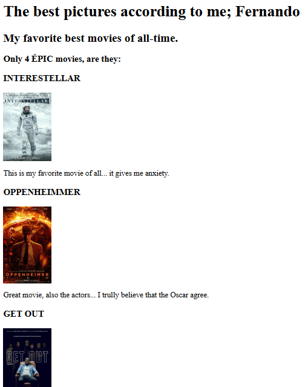

<!-- TODO 1: Create the HTML Boilerplate -->
 <!DOCTYPE html>
 <html lang="Pt-br">
 <head>
    <meta charset="UTF-8">
    <meta name="viewport" content="width=device-width, initial-scale=1.0">
    <title>Portifólio</title>
 </head>
 <body>
    
 </body>
 </html>

<!-- TODO 2: Add Your previous projects' HTML into the public folder -->
 <h1>Potifólio - web developer</h1>
 <h2>Seja bem-vindo! Sou o Fernando</h2>
 <h3>Vou te mostrar um pouco do meu trabalho</h3>
 <h2>Meus filmes favoritos</h2>
 <a href="./projects/index.html">clique aqui para ver todo o projeto </a><hr>

<!-- TODO 3: Take screenshots of your project previews and add the images to the images folder -->
<h2>My Birthday Invite</h2>
<a href="./projects/Nova pasta/index.html">clique aqui para ver todo o projeto </a><hr>

<!-- TODO 4: Add titles/subtitles etc. -->
 <p>Agora que você já deu uma boa olhada...</p>
<ul>
   <li><a href="./public/about.html">Mais </a>sobre quem sou <br></li>
   <li><a href="./public/contact.html">Contate-me,</a> estou aguardando!</li>
   

   
</ul>
 

<!-- TODO 5: Add a link to the project pages -->

<!-- TODO 6: Add images to show the project previews
HINT for TODO 6: You can use the height attribute set to 200 to make the image smaller:
https://developer.mozilla.org/en-US/docs/Web/HTML/Element/img#attr-height -->

<!-- TODO 7: Add the Contact Me and About Me page links -->